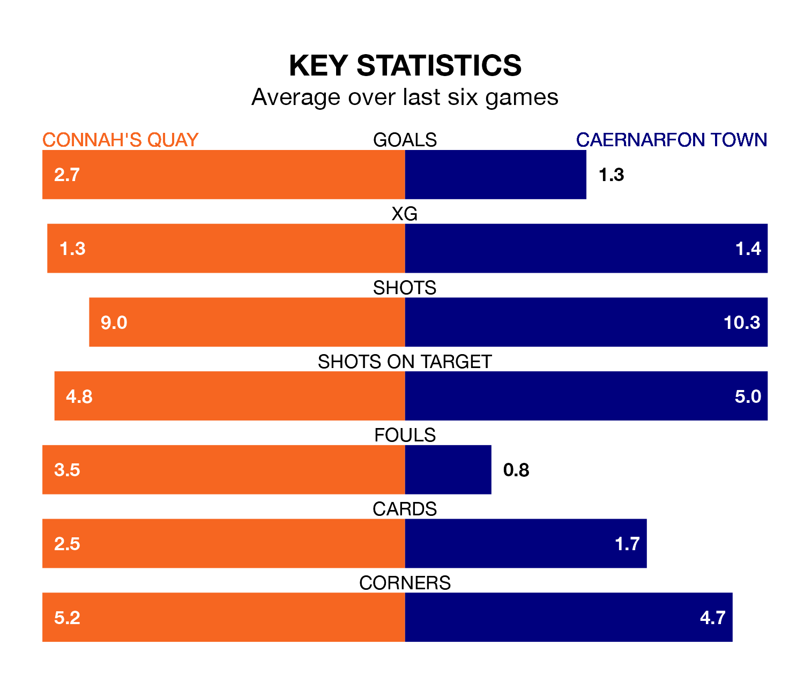

Relegation candidates Caernarfon Town face a challenge away against high-flying Connah's Quay at the Essity Stadium on Friday.
Caernarfon Town are rooted to the bottom of the Welsh Premier League table, and have picked up nine wins and four draws in their 22 games to date.
The Nomads, meanwhile, are second in the standings with 47 points, having won 15 and drawn two, and are 15 points behind table-toppers The New Saints.
With 59 goals in 22 games so far this season, Connah's Quay are the league's second-highest scorers with 2.7 goals per game. And they are conceding fewer than average, letting in 29 goals at a rate of 1.3 per game.
Caernarfon are also above average scorers, with 1.8 goals per game, compared to a league average of 1.5. They have conceded 1.9 goals per game.
In the last 10 years, Connah's Quay and Caernarfon have played each other on 18 occasions. Connah's Quay won 12 of them, Caernarfon two, and they drew four times.
On average, the Nomads scored 2.8 goals and the Canaries 0.8 in those matches.
Their last meeting was on October 27, when Connah's Quay won 6-1 at home.
The Nomads are in fantastic form in Welsh Premier League, with five wins and one loss from their last six games.
With two wins and two draws over that period, Town's form is much worse – they have taken eight points from 18, compared to the home team's 15.
Connah's Quay's last match was on January 13, a 1-0 win against Penybont, with Michael Wilde getting the goal for the Nomads.
Caernarfon drew 2-2 with Cardiff Met last time out, also on January 13, with Adam Davies and Danny Gosset on the scoresheet.
Updated: 13:20 (UTC), 29/01/24